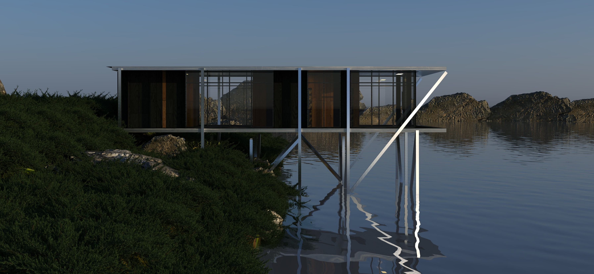
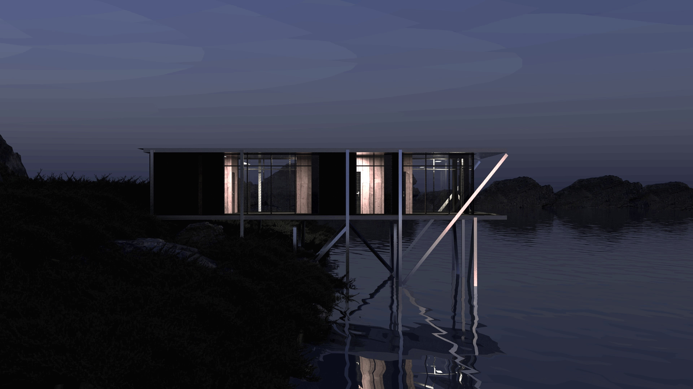
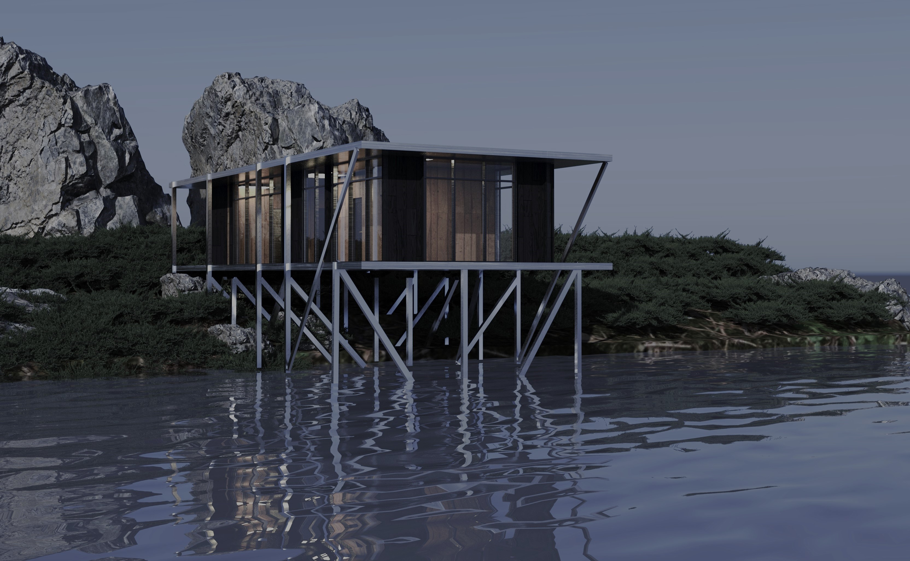

ЖК «СИЛУЭТ»
Жилой комплекс «Силуэт» формирует новую градостроительную доминанту района. В основе объемно-пространственного решения лежит идея тектонического сдвига масс, позволяющая обеспечить максимальную инсоляцию жилых помещений и создать выразительный силуэт здания в панораме города.




01 / Пространственный анализ и интеграция в среду
Анализ пешеходных потоков и инсоляционных карт позволил сформировать защищенный внутренний двор. Развертка фасада учитывает масштаб окружающей исторической застройки, деликатно дополняя её современными композитными материалами.


02 / Инженерные решения и BIM-автоматизация
Чертежи планов и разрезов разработаны сквозным методом в Revit. Структурные узлы экспортированы для прочностного анализа, что гарантирует абсолютное соответствие проектных решений и рабочей документации на стадии реализации.